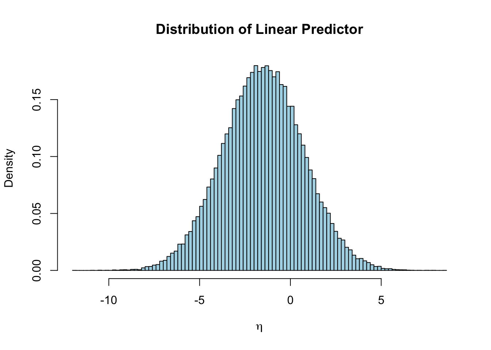

On the previous page, we ran through some manual bootstrapping for the purposes of showing their in-principle operation. There we used just a single predictor and a relatively small sample size.
Now let’s try to develop a bigger bootstrap validation procedure with a bigger sample size and more covariates. Again, start by generating some sample data, this time with \(\beta_0=-1.5\) and predictor effects \(\beta_k = 0.7\) for \(1 \leq k \leq 10\).
set.seed(123)n <-100000predictors <-10beta_0 <--1.5beta <-rep(0.7, predictors)# Matrix of linear predictorsX <-matrix(rnorm(n*predictors), nrow = n, ncol = predictors)colnames(X) <-paste0("x", 1:10)eta <- beta_0 + X %*% betap <-1/ (1+exp(-eta))# Simulate binary outcomesy <-rbinom(n, size =1, prob = p)print(paste0("Hence a prevalence of ", 100*mean(y), "%"))
[1] "Hence a prevalence of 29.445%"
Visualise:
hist(eta, breaks =100, col ="lightblue", main ="Distribution of Linear Predictor",xlab =expression(eta), freq =FALSE)

hist(p, breaks =100, col ="lightgreen", main ="Distribution of Predicted Probabilities",xlab ="Predicted Probability", freq =FALSE)
Create dataframe and model
library(rms)
Loading required package: Hmisc
Attaching package: 'Hmisc'
The following objects are masked from 'package:base':
format.pval, units